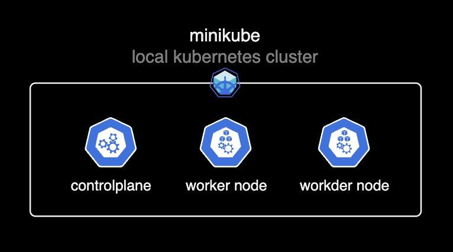
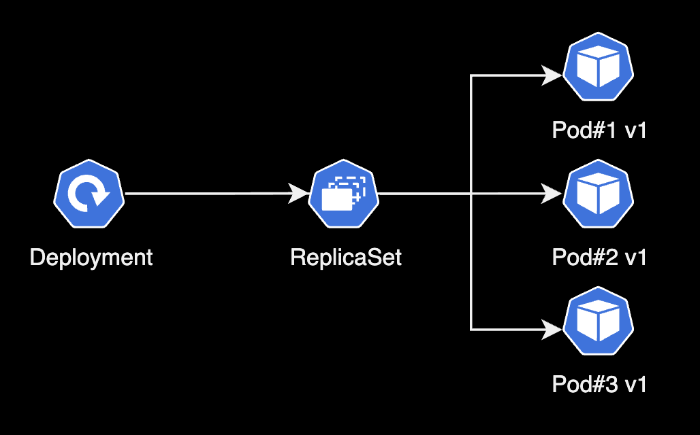
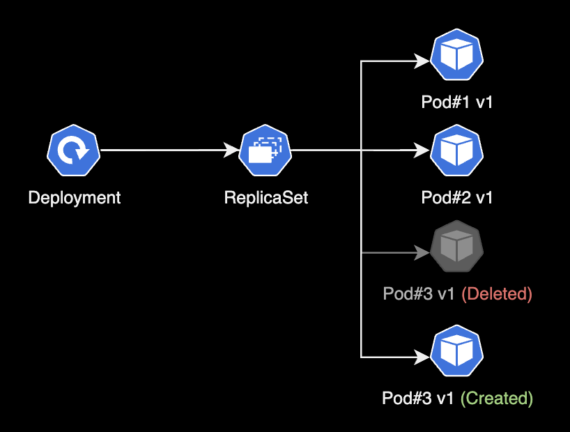

쿠버네티스 deployment 실습
개요
minikube 기반의 쿠버네티스 환경에서 deployment를 생성하고 제어하는 실습을 한다.
환경
- Hardware : macBook Pro (13", M1, 2020)
- OS : macOS Monterey 12.0.1
- minikube v1.24.0 + docker desktop v4.1.1
- kubectl stable v1.22.3
준비사항
해당 과정은 minikube가 구축된 이후 시점부터 진행된다. 반드시 minikube를 구성한 상태에서 이 실습을 진행해야만 한다.

본문
deployment 생성
- deployment는 애플리케이션을 배포하고 업데이트하기 위한 리소스이다.
- 실제 pod들은 deployment가 아닌 replicaset에 의해 생성, 관리된다.
- deployment를 생성하면 replicaset 리소스가 그 아래에 자동생성된다.

- pod를 감시하는 replicaset이 deployment를 지원하는 구조이다.
- 현업에서 deployment는 배포 업데이트에 주로 쓰인다. (e.g. 블루-그린 업데이트, 롤링 업데이트, 카나리 업데이트)
1. yaml 작성
nginx pod를 3대 배포하는 Deployment의 yaml 파일을 작성한다.
$ vi nginx-deploy.yaml
---
apiVersion: apps/v1
kind: Deployment # 타입은 Deployment
metadata:
name: nginx-deployment
labels:
app: nginx
spec:
replicas: 3 # 3개의 Pod를 유지한다.
selector: # Deployment에 속하는 Pod의 조건
matchLabels: # label의 app 속성의 값이 nginx 인 Pod를 찾아라.
app: nginx
template:
metadata:
labels:
app: nginx # labels 필드를 사용해서 app: nginx 레이블을 붙힘
spec:
containers: # container에 대한 정의
- name: nginx # container의 이름
image: nginx:1.7.9 # Docker Hub에 업로드된 nginx:1.7.9 이미지를 사용
ports:
- containerPort: 80
해당 yaml 코드를 복사 붙여넣기 해서 작성한다.
2. 생성
작성한 nginx-deploy.yaml 파일을 기반으로 deployment를 생성한다.
$ kubectl apply -f nginx-deploy.yaml
deployment.apps/nginx-deployment created
3. 확인
간단한 포맷으로 출력
$ kubectl get all
NAME READY STATUS RESTARTS AGE
pod/nginx-deployment-5d59d67564-5jfwj 1/1 Running 0 3m51s
pod/nginx-deployment-5d59d67564-djrms 1/1 Running 0 90s
pod/nginx-deployment-5d59d67564-vkkqp 1/1 Running 0 2m5s
NAME TYPE CLUSTER-IP EXTERNAL-IP PORT(S) AGE
service/kubernetes ClusterIP 10.96.0.1 <none> 443/TCP 4h34m
NAME READY UP-TO-DATE AVAILABLE AGE
deployment.apps/nginx-deployment 3/3 3 3 9m34s
NAME DESIRED CURRENT READY AGE
replicaset.apps/nginx-deployment-5d59d67564 3 3 3 9m34s
- deployment는 pod 템플릿의 각 버전마다 하나씩 여러 개의 replicaset을 생성한다.
- pod 템플릿의 해시값을 사용하면 deployment에서 지정된 버전의 pod 템플릿에 관해 항상 동일한(기존의) replicaset을 사용할 수 있다.
자세한 포맷으로 출력
-o wide 옵션을 붙이면 더 자세한 정보를 출력준다.
$ kubectl get all -o wide
NAME READY STATUS RESTARTS AGE IP NODE NOMINATED NODE READINESS GATES
pod/nginx-deployment-5d59d67564-5jfwj 1/1 Running 0 5m37s 172.17.0.6 minikube <none> <none>
pod/nginx-deployment-5d59d67564-djrms 1/1 Running 0 3m16s 172.17.0.7 minikube <none> <none>
pod/nginx-deployment-5d59d67564-vkkqp 1/1 Running 0 3m51s 172.17.0.5 minikube <none> <none>
NAME TYPE CLUSTER-IP EXTERNAL-IP PORT(S) AGE SELECTOR
service/kubernetes ClusterIP 10.96.0.1 <none> 443/TCP 4h36m <none>
NAME READY UP-TO-DATE AVAILABLE AGE CONTAINERS IMAGES SELECTOR
deployment.apps/nginx-deployment 3/3 3 3 11m nginx nginx:1.7.9 app=nginx
NAME DESIRED CURRENT READY AGE CONTAINERS IMAGES SELECTOR
replicaset.apps/nginx-deployment-5d59d67564 3 3 3 11m nginx nginx:1.7.9 app=nginx,pod-template-hash=5d59d67564
4. pod 재생성 테스트
Deployment와 연관된 replicaset은 pod의 개수를 유지하는 역할을 수행한다. pod 1개를 삭제해서 인위적으로 pod 개수를 줄여보자.
$ kubectl delete pod nginx-deployment-5d59d67564-djrms
pod "nginx-deployment-5d59d67564-djrms" deleted
djrms pod를 삭제했다.
$ kubectl get all
NAME READY STATUS RESTARTS AGE
pod/nginx-deployment-5d59d67564-5jfwj 1/1 Running 0 8m10s
pod/nginx-deployment-5d59d67564-82rvt 1/1 Running 0 88s
pod/nginx-deployment-5d59d67564-vkkqp 1/1 Running 0 6m24s
NAME TYPE CLUSTER-IP EXTERNAL-IP PORT(S) AGE
service/kubernetes ClusterIP 10.96.0.1 <none> 443/TCP 4h38m
NAME READY UP-TO-DATE AVAILABLE AGE
deployment.apps/nginx-deployment 3/3 3 3 13m
NAME DESIRED CURRENT READY AGE
replicaset.apps/nginx-deployment-5d59d67564 3 3 3 13m
djrms pod를 삭제하면 replicaset은 지정된 pod 개수(3개)를 유지하기 위해 82rvt pod를 자동생성한다.

$ kubectl describe pod nginx-deployment-5d59d67564-82rvt | grep -i controlled
Controlled By: ReplicaSet/nginx-deployment-5d59d67564
82rvt pod를 관리하는 컨트롤러는 nginx-deployment-5d59d67564 replicaset임을 확인할 수 있다.
롤링 업데이트
1. 롤링 업데이트 실행
명령어 형식
$ kubectl set image deployment/<deployment 이름> <container 이름>=<이미지 이름>:<이미지 버전>
실제 명령어 예시
$ kubectl set image deployment/nginx-deployment nginx=nginx:1.9.1
deployment.apps/nginx-deployment image updated
nginx-deployment에 설정된 nginx 1.7.9 버전의 이미지가 1.9.1 버전의 nginx 이미지로 업데이트 되었다.
2. 결과확인
$ kubectl get all
NAME READY STATUS RESTARTS AGE
pod/nginx-deployment-69c44dfb78-d97k5 1/1 Running 0 10s
pod/nginx-deployment-69c44dfb78-kqqk4 1/1 Running 0 9s
pod/nginx-deployment-69c44dfb78-kv6ms 1/1 Running 0 11s
NAME TYPE CLUSTER-IP EXTERNAL-IP PORT(S) AGE
service/kubernetes ClusterIP 10.96.0.1 <none> 443/TCP 5h11m
NAME READY UP-TO-DATE AVAILABLE AGE
deployment.apps/nginx-deployment 3/3 3 3 35s
NAME DESIRED CURRENT READY AGE
replicaset.apps/nginx-deployment-5d59d67564 0 0 0 35s
replicaset.apps/nginx-deployment-69c44dfb78 3 3 3 11s
기존의 replicaset은 비활성화되고, 새로운 replicaset인 69c44dfb78이 등장했다. 새 replicaset은 3대의 pod를 유지하고 있다.
$ kubectl describe deploy nginx-deployment
Name: nginx-deployment
Namespace: default
CreationTimestamp: Wed, 10 Nov 2021 00:23:05 +0900
Labels: app=nginx
Annotations: deployment.kubernetes.io/revision: 2
Selector: app=nginx
Replicas: 3 desired | 3 updated | 3 total | 3 available | 0 unavailable
StrategyType: RollingUpdate
MinReadySeconds: 0
RollingUpdateStrategy: 25% max unavailable, 25% max surge
Pod Template:
Labels: app=nginx
Containers:
nginx:
Image: nginx:1.9.1
주요 확인사항
- 컨테이너의 이미지(
Image:) 값이nginx:1.9.1로 변경된 것을 확인. - 변경 회수(
revision) 값이 1에서 2로 증가했다. 즉 1번 deployment의 변경사항이 발생했다는 점이다.
3. 변경기록 확인
명령어 형식
$ kubectl rollout history deployment <deployment 이름>
실제 명령어
$ kubectl rollout history deployment nginx-deployment
deployment.apps/nginx-deployment
REVISION CHANGE-CAUSE
1 <none>
2 <none>
최초에 revision 1에서 시작한다. 변경사유(CHANGE-CAUSE) 값은 지정해주지 않았기 때문에 <none>으로 출력된다.
4. 롤백
롤링 업데이트 중에 문제가 발생했을 경우, 롤링 업데이트 실행 전으로 즉시 되돌릴 수 있다.
명령어 형식
$ kubectl rollout undo deployment <deployment 이름> --to-revision=<숫자>
실제 명령어
deployment를 최초 버전(revision 1)으로 돌린다.
$ kubectl rollout undo deployment nginx-deployment --to-revision=1
deployment.apps/nginx-deployment rolled back
롤백 후 상태확인
$ kubectl get all
NAME READY STATUS RESTARTS AGE
pod/nginx-deployment-5d59d67564-24cll 1/1 Running 0 51s
pod/nginx-deployment-5d59d67564-9kgp8 1/1 Running 0 52s
pod/nginx-deployment-5d59d67564-dvv8n 1/1 Running 0 50s
NAME TYPE CLUSTER-IP EXTERNAL-IP PORT(S) AGE
service/kubernetes ClusterIP 10.96.0.1 <none> 443/TCP 5h23m
NAME READY UP-TO-DATE AVAILABLE AGE
deployment.apps/nginx-deployment 3/3 3 3 12m
NAME DESIRED CURRENT READY AGE
replicaset.apps/nginx-deployment-5d59d67564 3 3 3 12m
replicaset.apps/nginx-deployment-69c44dfb78 0 0 0 12m
nginx 이미지 버전을 1.9.1로 업그레이드 하면서 사용하지 않았던 5d59d67564 replicaset이 다시 pod 관리를 넘겨 받았다.
여기서 가장 중요한 것은 pod 3대도 기존 pod가 아니라 새로 생성(교체)된 pod라는 사실이다.
deployment 상세정보 확인
$ kubectl describe deploy nginx-deployment
Name: nginx-deployment
Namespace: default
CreationTimestamp: Wed, 10 Nov 2021 00:23:05 +0900
Labels: app=nginx
Annotations: deployment.kubernetes.io/revision: 3
Selector: app=nginx
Replicas: 3 desired | 3 updated | 3 total | 3 available | 0 unavailable
StrategyType: RollingUpdate
MinReadySeconds: 0
RollingUpdateStrategy: 25% max unavailable, 25% max surge
Pod Template:
Labels: app=nginx
Containers:
nginx:
Image: nginx:1.7.9
Image: 값이 nginx:1.9.1에서 nginx:1.7.9로 rollback 되었다. revision 값도 +1 되어 3이다.
5. 변경사유 기록
방법1. Annotation 수정
Annotation은 Label처럼 키:값 쌍으로 이루어져 있으며, 쿠버네티스 시스템이 필요한 정보들을 담고 있다. Annotation은 쿠버네티스 클라이언트나 라이브러리가 활용하는데 사용된다.
명령어 형식
change-cause에 값을 부여해 수정하는 방식이다. annotation을 수정하는 방식이 현업에서 더 권장되고 안전하다.
$ kubectl annotate deployment.v1.apps/<deployment 이름> kubernetes.io/change-cause="<변경사유>"
실행 명령어
$ kubectl annotate deployment.v1.apps/nginx-deployment kubernetes.io/change-cause="test update V2"
deployment.apps/nginx-deployment annotated
nginx-deployment의 change-cause 값이 변경되었다.
변경결과 확인
describe로 nginx-deployment의 상세정보를 확인해본다. 2번째 Annotation인 change-cause: test update V2 생성되어 있다.
$ kubectl describe deploy nginx-deployment
Name: nginx-deployment
Namespace: default
CreationTimestamp: Wed, 10 Nov 2021 18:54:18 +0900
Labels: app=nginx
Annotations: deployment.kubernetes.io/revision: 1
kubernetes.io/change-cause: test update V2
롤링 업데이트 기록도 확인해본다. change-cause annotation의 값과 동일하게 적혀있다.
$ kubectl rollout history deployment nginx-deployment
deployment.apps/nginx-deployment
REVISION CHANGE-CAUSE
1 test update V2
방법2. 직접 수정
deployment의 설정이 담긴 manifest 파일을 직접 수정한다. 이 방식은 위험하므로 annotation을 수정하는 방식을 추천한다.
$ kubectl edit deployment nginx-deployment
deployment.apps/nginx-deployment edited
rollout의 변경사유 기록을 위해 nginx-deployment의 설정파일을 연다.
annotations 아랫줄에 kubernets.io/change-cause: <사유>를 추가 입력해준다.
manifest 파일을 수정 후 저장하면 즉시 적용되니 주의하자.
# Please edit the object below. Lines beginning with a '#' will be ignored,
# and an empty file will abort the edit. If an error occurs while saving this file will be
# reopened with the relevant failures.
#
apiVersion: apps/v1
kind: Deployment
metadata:
annotations:
deployment.kubernetes.io/revision: "3"
kubectl.kubernetes.io/last-applied-configuration: |
{"apiVersion":"apps/v1","kind":"Deployment","metadata":{"annotations":{},"labels":{"app":"nginx"},"name":"nginx-deployment","namespace":"default"},"spec":{"replicas":3,"selector":{"matchLabels":{"app":"nginx"}},"template":{"metadata":{"labels":{"app":"nginx"}},"spec":{"containers":[{"image":"nginx:1.7.9","name":"nginx","ports":[{"containerPort":80}]}]}}}}
kubernetes.io/change-cause: nginx:1.7.9
creationTimestamp: "2021-11-09T15:23:05Z"
generation: 5
rollout 기록을 다시 조회해본다.
$ kubectl rollout history deployment nginx-deployment
deployment.apps/nginx-deployment
REVISION CHANGE-CAUSE
2 <none>
3 nginx:1.7.9
annotations에 입력한 nginx:1.7.9 가 그대로 출력된다.
rollout 재시작
deployment에 속한 전체 pod를 재시작하는 방법
명령어 형식
$ kubectl rollout restart deployment/<deployment 이름>
실행 명령어
$ kubectl rollout restart deployment/nginx-deployment
deployment.apps/nginx-deployment restarted
nginx-deployment가 재시작되었다.
pod, replicaset 상태 확인
$ kubectl get all
NAME READY STATUS RESTARTS AGE
pod/nginx-deployment-5468f7bfc5-cpd95 1/1 Running 0 5s
pod/nginx-deployment-5468f7bfc5-ds7sm 1/1 Running 0 4s
pod/nginx-deployment-5468f7bfc5-x6jjq 1/1 Running 0 3s
NAME TYPE CLUSTER-IP EXTERNAL-IP PORT(S) AGE
service/kubernetes ClusterIP 10.96.0.1 <none> 443/TCP 6h8m
NAME READY UP-TO-DATE AVAILABLE AGE
deployment.apps/nginx-deployment 3/3 3 3 57m
NAME DESIRED CURRENT READY AGE
replicaset.apps/nginx-deployment-5468f7bfc5 3 3 3 5s
replicaset.apps/nginx-deployment-5d59d67564 0 0 0 57m
replicaset.apps/nginx-deployment-69c44dfb78 0 0 0 56m
새 replicaset인 5468f7bfc5가 생성되고, 새로운 pod 3대도 함께 생성된다.
rollout 기록 확인
$ kubectl rollout history deployment nginx-deployment
deployment.apps/nginx-deployment
REVISION CHANGE-CAUSE
2 <none>
3 nginx:1.7.9
4 nginx:1.7.9
rollout 재시작을 실행하면서 revision 3에서 4로 변경되었다. 새로 생성된 revision 4의 CHANGE-CAUSE 값은 revision 3과 동일하게 가져온다.
마치며
현업에서 경험하는 대부분의 쿠버네티스 기반 Application은 단독 Pod 배포가 아닌, deployment를 통해 배포됩니다.
그만큼, 쿠버네티스 클러스터 운영자는 deployment 리소스에 대한 동작방식, 배포 전략과 같은 깊은 이해가 있어야 합니다.
쿠버네티스의 작동 방식을 개념적으로 완전히 이해하려면, 실제로 쿠버네티스 클러스터를 다뤄보는 것이 좋습니다. 다행히 요즘에는 쿠버네티스를 사용해볼 수 있는 툴이 많습니다. 보통 몇 분이면 충분합니다. 노트북에서 Minikube 같은 툴을 사용하든, 로컬 설치를 하든, 클라우드 공급업체가 제공하는 서비스를 이용하든, 쿠버네티스 클러스터는 이제 거의 모든 사람이 누구나 사용할 수 있습니다. - 책 ‘매니징 쿠버네티스’ 중